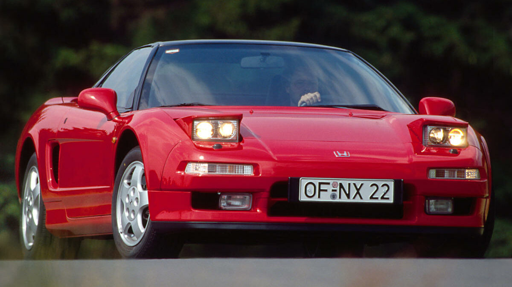

¿Japón tiene los mejores carros?
Japón ha ganado una reputación mundial por producir automóviles de alta calidad y confiabilidad. Aquí hay algunas razones por las cuales Japón es considerado un líder en la industria automotriz:
Calidad y Confianza: Los fabricantes de automóviles japoneses han establecido estándares de calidad muy altos. Se centran en la precisión en la fabricación y en el uso de materiales de alta calidad, lo que resulta en vehículos duraderos y confiables.
Japón tiene los mejores carros debido a su enfoque en la calidad, la innovación, la eficiencia y el compromiso con la mejora continua en la industria automotriz. Esto ha llevado a la creación de vehículos altamente confiables, avanzados y apreciados por los consumidores en todo el mundo.
